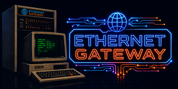

Ethernet Gateway
Add-On Reference
An add-on is a program the operator installs for callers to run from the gateway — what a bulletin board called a door: a game, a quiz, a little database, a front end to another service.
Callers find them on the Second Menu: 2 on the main menu,
then A Add-Ons, a numbered list. A terminal
add-on takes over the caller’s screen the way the SSH and Telnet
Gateways hand it to a remote host, and ESC twice quickly
(the back-arrow twice on a Commodore 64) leaves it. A GUI add-on
opens a window on the gateway machine’s own screen instead.
Any language will do. The gateway talks to an add-on over its standard
input and output — no library, no protocol — so a shell
script, Python, BASIC under an interpreter, or a compiled program all
work the same way. The code lives in src/addons.rs
(discovery, the manifest, the process tree), src/addons/gui.rs
(windows), src/addons/fetch.rs (the pinned download) and
src/telnet/addons_ui.rs (the list and the bridge).
cmd.exe for a Windows batch
file), refuses a program outside the add-on’s folder, and passes
on none of its own environment beyond a short list — the Groq key
and every password stay with the gateway.
One folder per add-on, inside ethernetgateway-data/AddOns/.
ethernetgateway-data/AddOns/
README.txt written once, never overwritten
hello/
addon.conf the manifest (required)
hello.sh the program it names
hello.cmd ... and its Windows twin
A folder copied in shows in the list the next time it is opened; no
restart. A folder that cannot be used — no addon.conf,
a manifest that does not parse, a program that is missing, not
executable, or outside the folder — is left out, and the reason is
written once to the log. Hidden folders (a leading dot) are ignored.
The list is sorted by name.
Ready-made add-ons live at
github.com/rickybryce/ethernetgateway-addons.
The desktop setup wizard downloads them (ticked by default): the exact
commit this release was built with, every file checked against a
SHA-256 recorded in the gateway, and a folder already present is never
touched. On Linux, macOS and the BSDs a program copied in by hand needs
chmod +x.
New and updated add-ons: Check for add-ons (C on the
telnet Add-Ons list and Configuration > Add-Ons; a button in the web and desktop Add-Ons
settings) reads a signed list from that repository and offers what is new, or newer than your
copy, and suits this gateway’s version. A list whose signature does not match the key
built into the gateway is refused; every file is checked against its SHA-256; an update is
swapped in whole and keeps files the list does not name. Only folders the gateway downloaded
(marked by a hidden .egw-installed file) are updated, never your own folder of
the same name, and never while someone is running it. Installing from telnet needs a
logged-in session.
addon.confkey = value lines, like egateway.conf. # starts a comment; a repeated key takes the last value; yes/no keys accept yes/no, true/false, on/off, 1/0.
| Manifest key | Meaning | Default |
|---|---|---|
name | Shown in the list | the folder name |
description | One line, shown as it starts and in the settings | empty |
version | The add-on’s version: an update is offered when the repository’s is newer (1.10 is after 1.9) | empty |
author | For your own records | empty |
min_gateway, max_gateway | The Ethernet Gateway versions it runs on, e.g. 1.1.0. Each compares only the parts it gives: max_gateway = 1.4 covers every 1.4.x. Outside the range the add-on is not listed, and the log says why. Set max_gateway only once a later gateway is known to break it | any |
mode | terminal, gui (a window on the gateway’s screen) or both | terminal |
command, args | The terminal side’s program, relative to the folder, and its arguments, split into words like a shell would but without one (quotes group words; no variables or wildcards) | required for terminal/both |
gui_command, gui_args | The window side’s program and arguments | required for gui/both |
command_linux, command_macos, command_windows | This platform’s program instead (and args_*, gui_command_*, gui_args_* the same way). linux covers the BSDs | — |
input | line: the gateway echoes and edits, and sends the line on Enter. raw: each key as it is pressed | line |
terminals | Which it supports: any of ansi, ascii, petscii | all three |
min_columns | Refused on a narrower screen | 0 |
petscii | translate: write ANSI and the gateway converts it for a Commodore. native: write PETSCII yourself; the bytes pass untouched | translate |
idle_minutes | Ended after this long with nothing sent either way; 0 keeps the session’s own idle timeout | 0 |
max_minutes | Ended after this long in all | 0 (none) |
single_instance | Only one caller at a time on the terminal side | no |
gui_wait | A caller who opens the window waits for it to close (ESC twice closes it). The program must be the window itself: a launcher that hands off and exits counts as closed at once | no |
A clean environment: of the gateway’s own variables only PATH, HOME, USER, LOGNAME, LANG, LC_ALL, LC_CTYPE, TZ, TMPDIR (and on Windows SYSTEMROOT, SYSTEMDRIVE, WINDIR, COMSPEC, PATHEXT, USERPROFILE, TEMP, TMP) reach it. It runs in its own folder. The gateway adds:
| Variable | Value |
|---|---|
EG_TERMINAL | ansi, ascii or petscii |
EG_COLUMNS, EG_ROWS | The caller’s screen size, as the gateways report it to a remote host |
EG_COLOR | 1 or 0 |
EG_PETSCII | native for a Commodore caller with petscii = native, else translate |
EG_INPUT | line or raw |
EG_USER | The gateway login name when login is on; never a password |
EG_REMOTE_ADDR | The caller’s address; empty for a local session |
EG_CONNECTION | telnet, ssh, serial, relay, or desktop for a window opened from the desktop window |
EG_ADDON_DIR, EG_DATA_DIR, EG_TRANSFER_DIR | Absolute paths: its folder, the data folder, the transfer directory |
EG_GATEWAY_VERSION | e.g. 1.1.0 |
TERM | ansi when the add-on should write ANSI, else dumb |
A window also gets DISPLAY, WAYLAND_DISPLAY, XAUTHORITY, XDG_RUNTIME_DIR, XDG_SESSION_TYPE, DBUS_SESSION_BUS_ADDRESS and, on Windows, APPDATA, LOCALAPPDATA, PROGRAMDATA.
Write to standard output; read from standard input. Standard error goes to the gateway’s log (200 lines, 200 characters each, at most).
- Newlines: write
\n; the gateway sends CR LF. Inpetscii = nativenothing is converted — end lines with\r. - Line input: the gateway echoes, handles Backspace, ignores arrow keys, and sends the line with
\n(\rin native PETSCII) on Enter. A line is at most 1024 bytes. - Raw input: each key as pressed; Backspace arrives as
0x7F, a Commodore’s back-arrow as ESC. Draw your own echo. Keys typed faster than the add-on reads are kept, up to 64 KB. - Colour and the cursor: write ANSI. For a Commodore with
translate, colours, clear screen, home and relative cursor moves are converted; absolute positioning (ESC[r;cH) is dropped. An ASCII caller gets every escape sequence stripped, so checkEG_TERMINALorEG_COLORbefore drawing. - Size: keep to
EG_COLUMNS×EG_ROWS— 40 columns on a Commodore. - No terminal: stdin and stdout are pipes, not a tty, so a curses program will not work. Flush output after a prompt that does not end a line.
Exit when done; a non-zero status is shown to the caller (“Hello ended with error 2.”).
The run ends when the add-on closes its standard output (normally by exiting); the gateway waits up to two seconds for its status. Whether it ended by itself, the caller left or hung up, or a time limit ran out, the gateway then ends the add-on and everything it started: its process group on Linux, macOS and the BSDs, its job object on Windows. A program left running in the background does not survive it. Do not rely on a signal to clean up — write what matters as you go.
A gui add-on opens on the gateway machine’s own desktop — the only screen the gateway has.
- A caller is told where it went (“Clock opened on the gateway’s screen (pi5).”) and goes back to the list, or with
gui_wait = yeswaits for it to close. - One window per add-on: a second caller is told it is already open.
- The window belongs to the gateway: a caller hanging up leaves it open; it closes when the gateway stops, and what it started goes with it.
- A gateway with no desktop (a Pi started from a service or over SSH) refuses it, unless
addon_displaynames an X display (Linux, e.g.:0) the gateway’s user may draw on. ThenDISPLAYis that andWAYLAND_DISPLAYis removed. - The desktop window’s Add-Ons… popup has Open and Close for every add-on with a window.
- It gets no input and its output is discarded; standard error goes to the log.
- A
bothadd-on opens its window when it can, then runs its terminal side for the caller. - macOS: a script in the folder can start an app bundle with
open -W -a, so the gateway still sees when it closes.
.cmd or .bat runs through cmd.exe, so its args pass through it; an argument with % or ^ may arrive altered. Save batch files with CRLF line endings. No console window appears on the gateway’s screen.
A complete add-on: a folder hello holding these two files.
# addon.conf name = Hello description = Says hello and asks your name command = hello.sh command_windows = hello.cmd
#!/bin/sh # hello.sh (chmod +x hello.sh) echo "Hello from the gateway, $EG_TERMINAL terminal, $EG_COLUMNS columns." printf 'Your name? ' read -r name echo "Nice to meet you, $name."
The add-ons repository has this one with its Windows twin, and a number-guessing game.
Configuration → A Add-Ons on telnet; the Add-Ons… button in the General frame on the web page and in the desktop window. Changes apply at once.
| Key | Default | Meaning |
|---|---|---|
addons_enabled | true | Offer add-ons on the Second Menu. Off hides them. |
addon_display | empty | Linux: the X display GUI add-ons open on when the gateway has no desktop. Empty: they are refused. |
addons_disabled | empty | Installed add-ons not offered, as folder names separated by commas. |
Deep-dive reference pages for every protocol and interface, plus the character-set tables and ANSI escape-sequence reference.
CP/M Emulator
UART profiles, EGT8080, HBIOS calls, BDOS/BIOS coverage.
XMODEM
128-byte blocks; CRC-16 / checksum negotiation.
YMODEM
Block-0 metadata, batch, exact size truncation.
ZMODEM
Streaming; ZDLE, CRC-32, autostart, resume.
Kermit
Send-Init negotiation; F / A / D / Z / B transfer.
Punter
C1 dual checksum, two-phase, GOO/BAD/ACK.
AT Commands
Hayes command set, S-registers, +++ escape.
Telnet
IAC negotiation, every option, the NVT data phase.
SSH
Server, gateway, host keys, TOFU, auth modes.
FTP
The FTP server: logins, files, passive ports, slaves.
Add-Ons (this page)
Programs callers run like BBS doors: the manifest, environment, windows.
Gopher
Menus, every item type, Gopher+ attributes and forms.
Character Code Tables
Hex tables for every encoding: ASCII, ANSI, PETSCII, ATASCII, Baudot/ITA2, ZX Spectrum, TRS-80.
ANSI Escape Sequences
Cursor, colour/SGR, erase, and screen-mode escape codes, with the raw hex bytes.